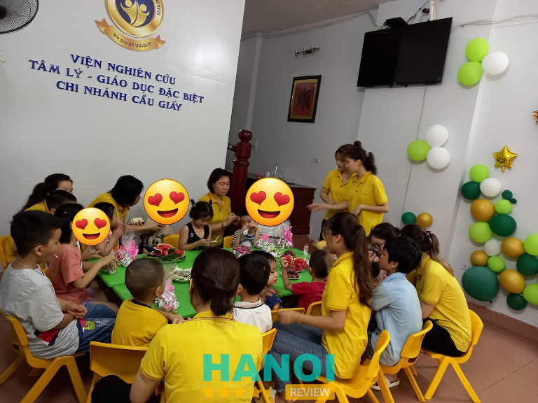

3 Trung tâm can thiệp trẻ tự kỷ tại quận Cầu Giấy tốt nhất
Các trung tâm can thiệp trẻ tự kỷ tại quận Cầu Giấy được nhiều phụ huynh tín nhiệm vì có uy tín nhiều năm, đội ngũ giáo viên giàu kinh nghiệm, chi phí hợp lý và cơ sở vật chất hiện đại, an toàn.
Top 3 Trung tâm can thiệp trẻ tự kỷ tại quận Cầu Giấy uy tín, tận tâm
Dưới đây là top 3 Trung tâm can thiệp trẻ tự kỷ tại quận Cầu Giấy có chất lượng cao và được đánh giá cao mà các bố mẹ có thể cân nhắc để gửi gắm con em mình, nếu chẳng may bé bị mắc hội chứng này.
Trung tâm Tâm lý Giáo dục chuyên biệt NHC Việt Nam – NHC Academy
Trung tâm Tâm lý Giáo dục chuyên biệt NHC Việt Nam là một trong những đơn vị đi đầu trong lĩnh vực phát hiện – can thiệp sớm ở trẻ em đặc biệt tại Thủ đô Hà Nội nói riêng và toàn Việt Nam nói chung.
Dựa trên kết quả sàng lọc, NHC Academy sẽ cung cấp thông tin để phụ huynh hiểu chính xác triệu chứng mà trẻ đang mắc phải, đồng thời còn đề xuất các phương án can thiệp phù hợp và hiệu quả nhất. Như vậy sẽ tránh được tình trạng giảm sút chất lượng điều trị vì kết hợp cùng lúc quá nhiều phương pháp.
Những phương pháp mà đơn vị luôn ứng dụng từ trước đến nay là: tâm lý trị liệu, giáo dục đặc biệt, giáo dục Montessori, điều khí dưỡng tâm, khoa học phát triển tiềm năng con người. Các phương pháp này đều đã được chứng nhận về khoa học và mang đến những hiệu quả toàn diện nhất.
Hơn nữa, chính đội ngũ giáo viên và chuyên gia tâm lý của trung tâm sẽ nghiên cứu và thực hiện “cá nhân hóa” liệu trình can thiệp cho mỗi đứa trẻ. Mỗi ngày, họ cũng sẽ theo dõi sát sao và thăm khám để nắm tình hình bệnh cũng như những chuyển biến tích cực ở bé, sau đó thông báo lại với phụ huynh.
Tập thể nhân lực, từ các chuyên gia tâm lý, giáo viên cho đến nhân viên tư vấn đều được đào tạo kỹ lưỡng về tri thức, nghiệp vụ và thái độ, nhằm mang đến cho các bố mẹ một dịch vụ chu đáo, chuyên nghiệp nhất, đồng thời còn giúp cho trẻ em đặc biệt mau chóng hết bệnh, khôi phục sức khỏe cũng như chức năng, từ đó có thể hòa nhập nhanh với cộng đồng.
Bên cạnh đó, NHC Academy còn tập trung xây dựng hệ thống phòng học chuẩn Montessori và các phòng chuyên dụng phù hợp với từng nhóm tuổi. Cùng với đó là cơ sở hạ tầng khang trang, tiện nghi tân tiến, đèn điện, giáo cụ chuẩn xịn, dụng cụ bổ trợ có chất lượng tốt,….
Khung giờ làm việc từ 8h – 18h, hoạt động từ thứ Hai đến Chủ Nhật.
Thông tin liên hệ:
- Địa chỉ: 235, Phố Quan Hoa, Q. Cầu Giấy, TP. Hà Nội
- Điện thoại: 0906.818.123
- Email: giaoducnhc@gmail.com
- Website: giaoducnhc.vn
- Fanpage: FB.com/giaoducnhc
Tham khảo: Trung tâm Tâm lý giáo dục chuyên biệt NHC Việt Nam: Địa chỉ chăm sóc và can thiệp trẻ em chậm phát triển
Hệ thống Âm ngữ trị liệu Happy House
Hệ thống Âm ngữ trị liệu Happy House chuyên tiếp nhận can thiệp cho các trẻ em đặc biệt, như là: trẻ tự kỷ, trẻ tăng động giảm chú ý, trẻ chậm nói, trẻ gặp khó khăn trong học tập và trẻ bị ngọng. Đơn vị cung cấp đa dạng chương trình đào tạo, phù hợp với nhiều tình trạng khác nhau, gồm có:
- Can thiệp cá nhân 1-1
- Trị liệu nhóm
- Trị liệu vận động
- Trị liệu kỹ năng sống
- Âm ngữ trị liệu
- Âm nhạc trị liệu
Trung tâm tự hào khi là nơi hội tụ của tập thể cán bộ cấp cao, giáo viên và chuyên viên có chuyên môn vững chắc, nhiều kinh nghiệm thực tiễn, luôn trân trọng và kiên trì với trẻ. Hơn nữa, họ còn tạo điều kiện để trau dồi và nâng cao nghiệp vụ thường xuyên.

Trong công tác giảng dạy cho trẻ em đặc biệt, họ cũng đã trải qua các lớp đào tạo bài bản nên có thể vận dụng thành thạo những phương pháp chuẩn, được công nhận tại nhiều quốc gia trên thế giới. Đó là:
- Phân tích hành vi ứng dụng (ABA/VB)
- Âm ngữ trị liệu
- PECS
- TEACCH
- Tâm vận động
- Floor Time
- Montessory
- Âm nhạc trị liệu
- Trị liệu vận động
- Điều hòa cảm giác
Trung tâm cũng chú trọng đầu tư xây dựng cơ sở vật chất và tiện nghi xịn xò cùng với hệ thống lớp học, phòng chức năng sạch sẽ, thông thoáng và được trang hoàng nhiều màu sắc tươi tắn, hơn hết, còn bố trí đầy đủ thiết bị, đồ dùng cũng như các loại giáo cụ thiết yếu.
Thời gian hoạt động từ 7h – 17h, làm việc từ thứ Hai đến thứ Bảy.
Thông tin liên hệ:
- Địa chỉ: 5, Lô 1, Ô C4 Nam Trung Yên, P. Trung Hòa, TP. Hà Nội
- Điện thoại: 0339.840.999
- Email: happyhouse.hanoi@gmail.com
- Website: happyhouse.info.vn
- Fanpage: FB.com/trungtamamngutrilieuHappyHouse
Đọc thêm: 10 Trung tâm can thiệp trẻ tăng động giảm chú ý tại Hà Nội uy tín, tận tâm
Trung tâm Giáo dục đặc biệt Hoa Nhật Vàng
Trung tâm Giáo dục đặc biệt Hoa Nhật Vàng là đơn vị có uy tín và kinh nghiệm nhiều năm trong lĩnh vực can thiệp sớm ở trẻ mắc các triệu chứng, như: tự kỷ, chậm phát triển trí tuệ, chậm nói, nói lắp,…
Vì vậy, nếu đang tìm kiếm một cơ sở giáo dục đặc biệt đáng tin cậy, chất lượng thì bạn có thể lưu lại địa chỉ này.
Hiện tại, Hoa Nhật Vàng đang phát triển những hình thức can thiệp, gồm:
- Can thiệp cá nhân: can thiệp tại phòng riêng, chỉ có 1 cô 1 trò (học 1-2 tiếng/ngày)
- Can thiệp bán trú: bé sẽ được tham gia các lớp học nhóm, chẳng hạn như: ngôn ngữ giao tiếp, nhận thức,…
- Lớp tiền tiểu học dành cho các bé chuẩn bị vào lớp 1.
Từ kết quả bài đánh giá đầu vào, trung tâm sẽ xếp trẻ vào lớp học đúng với vấn đề đang mắc phải và vận dụng linh hoạt các phương pháp trị liệu phù hợp. Hơn nữa, trẻ còn tạo điều kiện để hòa mình vào các hoạt động chung với bạn bè, từ đó phát triển tương tác xã hội.

Cứ mỗi 3 tháng, trẻ sẽ được kiểm tra lại, để thầy cô giáo và chuyên gia tâm lý thay đổi chương trình can thiệp sao cho thích hợp với tốc độ và tình trạng phát triển ở bé. Ngoài ra, đơn vị còn xây dựng bản đánh giá về quá trình học của bé hàng tuần, hàng tháng và sổ nhật ký hàng ngày cho trẻ.
Không chỉ gửi chương trình can thiệp của mỗi tuần, mỗi tháng, trung tâm cũng sẽ trao đổi trực tiếp về quá trình và thành tích học tập của trẻ để phụ huynh nắm bắt. Đồng thời, còn hướng dẫn cho họ một số cách nuôi dạy, chăm sóc trẻ tại nhà.
Hệ thống phòng học ở đây khá rộng, thoáng, sạch đẹp và được trang bị đầy đủ tiện nghi, điện nước cũng như các loại giáo cụ, dụng cụ học tập. Tại phòng vận động, trẻ sẽ được trị liệu thông qua các trò chơi vận động nhẹ nhàng và điều hòa cảm giác.
Một điểm cộng khác của Hoa Nhật Vàng đó là đội ngũ giáo viên dày dặn kinh nghiệm, nhiệt huyết và có trình độ học vấn cao. Nhờ có họ mà trung tâm đã giúp đỡ thành công cho rất nhiều trẻ em đặc biệt tại Hà Nội và các khu vực lân cận.
Giờ làm việc 7h30 – 19h30, hoạt động từ thứ Hai đến Chủ Nhật.
Thông tin liên hệ:
- Địa chỉ: 63 Nguyễn Khả Trạc, Mai Dịch, Q. Cầu Giấy, TP. Hà Nội
- Điện thoại: 0987.754.956
- Email: giaoducdacbiethoanhatvang@gmail.com
- Website: giaoducdacbiethoanhatvang.com
- Fanpage: FB.com/hoanhatvang
Có thể bạn cần tìm: 10 Trung tâm dạy trẻ chậm nói tại Hà Nội uy tín, tận tâm, chuyên nghiệp
Top 5 Tiêu chí lựa chọn Trung tâm can thiệp trẻ tự kỷ tại quận Cầu Giấy uy tín hàng đầu
Nếu chọn nhầm các trung tâm can thiệp trẻ kém chất lượng sẽ khiến cho phụ huynh lãng phí một khoản tiền và thời gian rất lớn mà trẻ vẫn không có những chuyển biến tích cực. Vì vậy, trong quá trình xem xét giữa nhiều cơ sở, các bố mẹ nên dựa vào một số tiêu chí dưới đây.
Số năm hoạt động:Bố mẹ nên ưu tiên trung tâm đã thành lập và vẫn hoạt động ổn định sau nhiều năm, bởi vì những đơn vị đó thường có chất lượng đào tạo tốt, đội ngũ giáo viên giỏi, tận tâm, cơ sở vật chất xịn xò và học phí hợp lý.
Đánh giá của các phụ huynh khác:Bố mẹ nên chọn trung tâm được phần lớn phụ huynh đã và đang có con em thực hiện can thiệp đánh giá cao về chất lượng giảng dạy, điều kiện học tập,…
Chương trình can thiệp:Bố mẹ nên chọn trung tâm thiết kế chương trình can thiệp và chăm sóc chuyên sâu dựa trên mức độ bệnh của bé nhà mình. Như vậy, trẻ sẽ sớm hết bệnh, hồi phục và mau chóng tái hòa nhập, đồng thời còn phát triển toàn diện.
Tập thể giáo viên:Bố mẹ nên chọn trung tâm sở hữu đội ngũ có trình độ chuyên môn cao, dày dặn kinh nghiệm và có tinh thần trách nhiệm tốt, kiên nhẫn, đặc biệt yêu thương trẻ con. Tuy nhiên, bố mẹ cũng cần theo sát thời gian trẻ can thiệp ở trung tâm nhằm hạn chế nguy cơ trẻ bị bạo hành hay xâm hại.
Hệ thống phòng học, cơ sở vật chất:Bố mẹ nên chọn trung tâm có sự đầu tư mạnh mẽ về hệ thống trang thiết bị, giáo cụ, đồ dùng học tập,… Hơn nữa, hệ thống phòng học, phòng ăn, khu vực vui chơi,… của trẻ đều được thiết kế rộng rãi, sạch đẹp và đầy đủ tiện nghi.
Chi phí can thiệp:Bố mẹ nên chọn trung tâm đưa ra mức học phí phù hợp với điều kiện tài chính của gia đình. Để làm được như vậy thì trước tiên, phụ huynh nên khảo sát và so sánh chi phí của nhiều cơ sở giáo dục khác nhau.
Dịch vụ tư vấn:Bố mẹ nên chọn trung tâm có dịch vụ tư vấn “cá nhân hóa” về quá trình và chi phí củ chương trình can thiệp, đồng thời còn hướng dẫn thêm những phương pháp giảng dạy, chăm sóc trẻ tự kỷ tại nhà.
Hy vọng bài tổng hợp thông tin về 3 trung tâm can thiệp trẻ tự kỷ tại quận Cầu Giấy này có thể phần nào giúp cho các phụ huynh giảm bớt áp lực của việc tìm kiếm một cơ sở giáo dục chất lượng và đáng tin cậy.
Có thể bạn quan tâm
- 10 Địa chỉ dạy tiếng Anh cho trẻ em ở Hà Nội nổi tiếng, uy tín
- 10 Cửa hàng đồ chơi trẻ em tại Hà Nội đa dạng, chất lượng tốt
- 10 Shop bán áo dài trẻ em tại Hà Nội đẹp nhất, giá cả phải chăng
DOANH NGHIỆP: Đăng tải thông tin MIỄN PHÍ.
Tin đọc nhiều


3 Trung tâm can thiệp trẻ tăng động giảm chú ý tại Cầu Giấy uy...
Quá trình tìm kiếm những trung tâm can thiệp trẻ tăng động giảm chú ý tại Cầu Giấy của nhiều bậc phụ huynh dường như...

10 Trung tâm khám tâm lý cho trẻ vị thành niên ở Hà Nội có...
Việc lựa chọn nơi khám tâm lý cho trẻ vị thành niên ở Hà Nội luôn khiến nhiều phụ huynh băn khoăn, bởi giai đoạn...
10 Chuyên gia tư vấn hỗ trợ trầm cảm giỏi ở Hà Nội nên tham...
Tìm kiếm chuyên gia tư vấn hỗ trợ trầm cảm giỏi ở Hà Nội là bước ngoặt quan trọng giúp bạn vượt qua những đám...

5 Chuyên gia tư vấn chuyện ngoại tình ở Hà Nội mang lại giải pháp...
Việc tìm kiếm một chuyên gia tư vấn chuyện ngoại tình ở Hà Nội uy tín là bước ngoặt quan trọng giúp bạn vượt qua...

Trở thành người đầu tiên bình luận cho bài viết này!